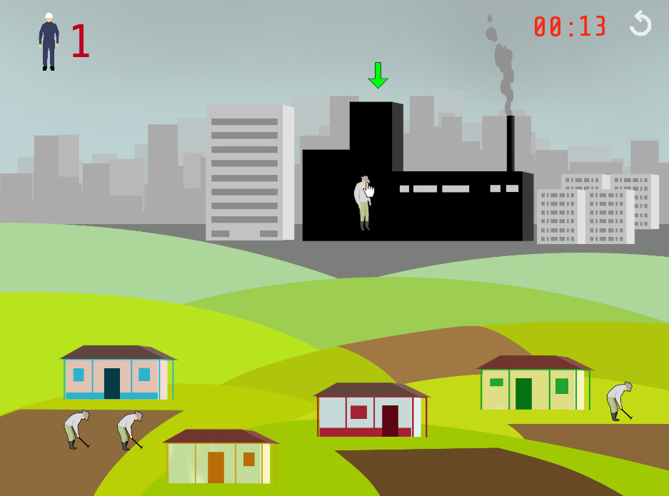

La noción de progreso, sostenida sobre la promesa de un futuro
emancipador capaz de ofrecer un mayor bienestar social gracias al
desarrollo tecnológico e industrial, y anclado a la vida en la ciudad,
parece seguir vigente en el imaginario colectivo, aún cuando la
situación actual de crisis global demuestra su fracaso.
Resultado de la asignatura Game Jam de la Maestría en Tecnología y
Estética de las Artes Electrónicas de la UNTREF, e inspirado por el
trabajo de MolleIndustria donde el videojuego opera como un medio
crítico, Progreso es por un lado, un juego de agilidad que consiste en
llevar en un tiempo límite a la mayor cantidad de personas del campo a
la fábrica, y por otro, una narrativa interactiva corta que pone a
prueba la intuición y la naturaleza subversiva propia del jugador,
mediante la posibilidad de explorar un modo de juego alterno a la
instrucción misma de éste, o dicho de otra forma, la posibilidad de no
realizar ninguna acción y dejar que el juego transcurra sólo.
En Progreso no hacer nada es válido como una opción de juego, donde
“hacer nada”, asumido como la posibilidad de detenerse, observar y
pensar, permite reconocer un escenario posible de lo que sucedería si no
seguimos el juego propuesto por el sistema.

Link de descarga:
http://bit.ly/197A5yT